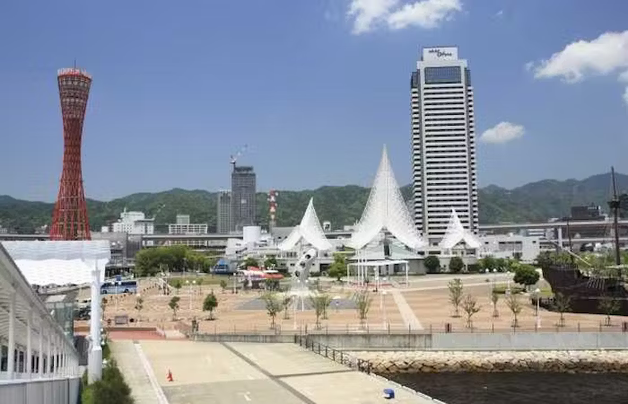
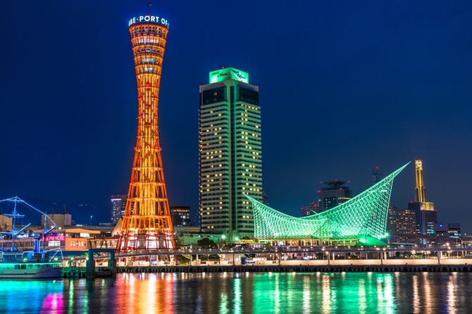

This is a short guide to Kobe. My hometown is surrounded by mountains, so it is full of nature. I chose my hometown this time because I want to introduce it. It uses some kind of symbol to indicate where it is. The mountain symbol shows where the mountain is. A tree symbol shows where the park is. The airplane symbol shows the airport. Finally, the station symbol shows where the station is. I want people to know where things are by looking at this map
This is view of Kobe
Source https://www.ikyu.com/kankou/arealist8275/
This is view of Kobe night
Source https://www.jalan.net/news/article/451812/